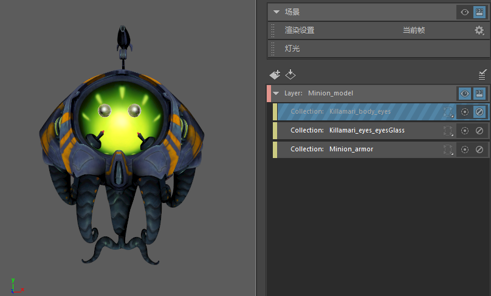

通过启用或禁用集合控制其可见性。只有已启用的集合才会影响层且可见。
若要启用或禁用集合，请单击  图标。已启用的集合使用 图标表示，而已禁用的集合则使用
图标。已启用的集合使用 图标表示，而已禁用的集合则使用  和对角线图案表示。
和对角线图案表示。
-
只有已启用的集合才在视口中可见，且包含在“渲染视图”(Render View)和批渲染中。
通过将集合设置为隔离选定对象，可以进一步控制视口中的可见性。请参见在视口中显示集合的隔离子集。
-
如果禁用某个集合，则其相应的覆盖也会遭到禁用。请参见禁用覆盖。
启用/禁用条件按自上而下的顺序进行解释。因此，如果两个（或更多）集合共享对象且分别处于启用和禁用状态，则列表中排在最下面的集合将确定共享对象是否包含在层中。
在本示例中，集合 Killamari_body_eyes 包含角色的身体和眼睛。
同时，集合 Killamari_eyes_eyesGlass 包含角色的眼睛和眼镜。
由于 Killamari_eyes_eyesGlass 在层次中位于 Killamari_body_eyes 的下面，且 Killamari_eyes_eyesGlass 设置为已启用，因此，角色的眼睛包含在层中。

现在，如果反转这两个集合的顺序：如果 Killamari_body_eyes 在层次中位于 Killamari_eyes_eyesGlass 的下面，且 Killamari_body_eyes 设置为已禁用，则 Killamari_body_eyes 集合优先，并且角色的眼睛会从层中排除。